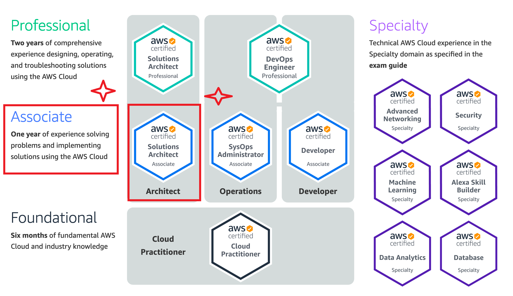
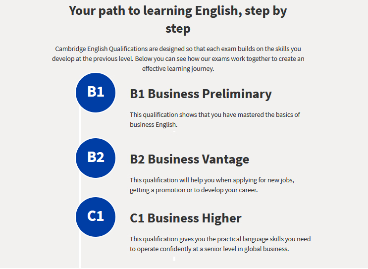
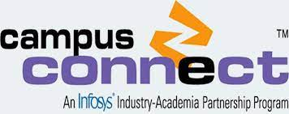
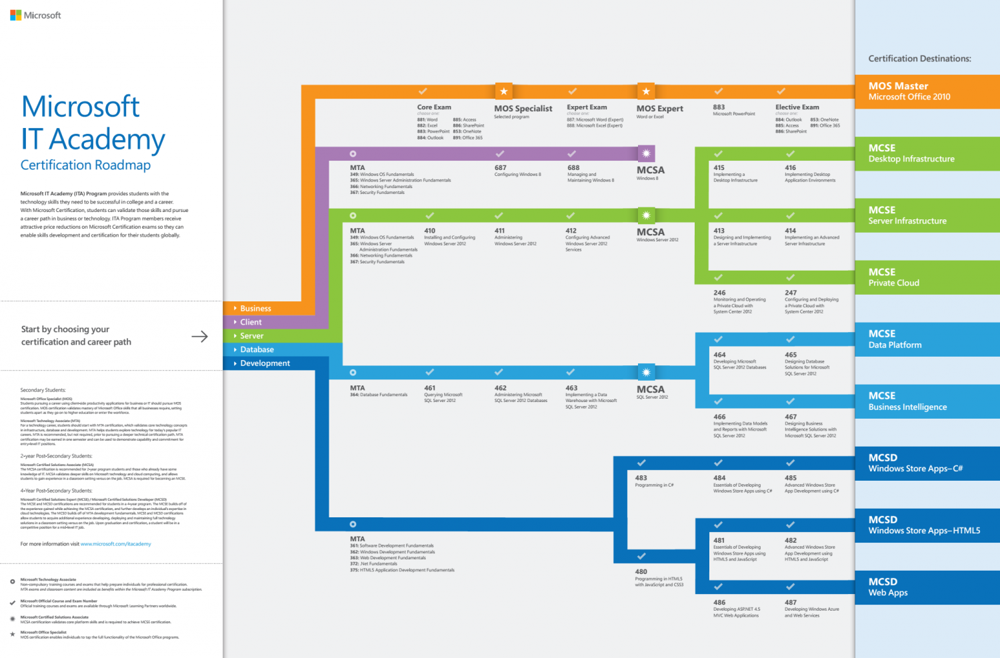
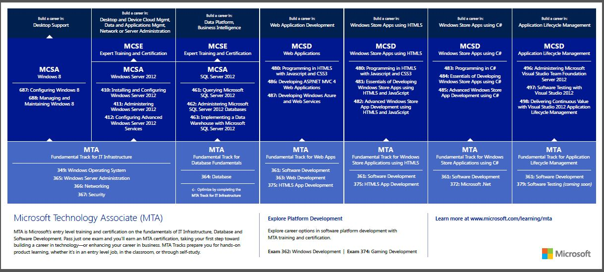
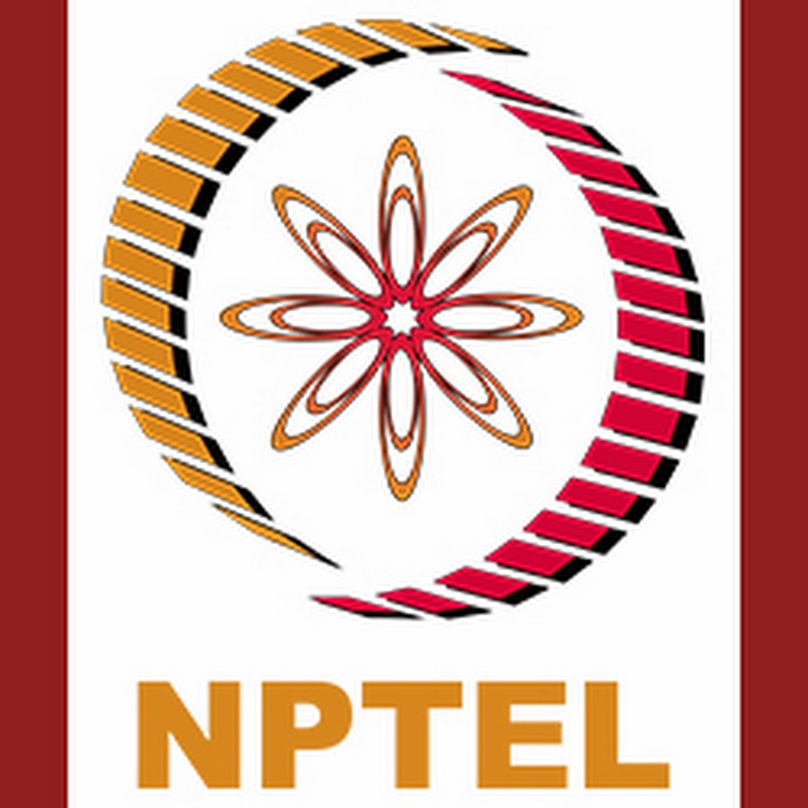
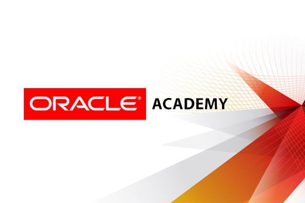
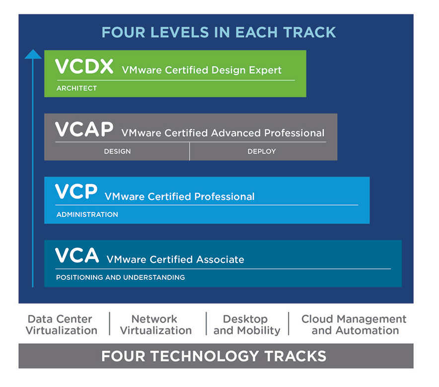

Value Added Courses
The following certificate course(s) are offered by Department of Computer Science & Engineering to all B.E/B.Tech students.

Amazon Web Service (AWS) Certification
AWS Certification demonstrates technical expertise, helps you advance your career, and helps employers find skilled cloud professionals in order to,- Demonstrate you have expertise to design, deploy, and operate highly available, cost-effective, and secure applications on AWS
- Gain recognition and visibility for your proven skills and proficiency with AWS
- Foster credibility with your employer and peers
- Earn tangible benefits
Contact:
Faculty Student Advisor: Mr. R Hemant Kumar, M.E., Email: hemantkumar-cse@saranathan.ac.in
Faculty Student Advisor: Mr. R Hemant Kumar, M.E., Email: hemantkumar-cse@saranathan.ac.in

Business English Certificate (BEC) Course
Cambridge English Qualifications are in-depth exams that make learning English enjoyable, effective and rewarding. This course is designed to help professionals develop the English language skills to communicate confidently in an international workplace, our business qualifications prove to employers that you have the English language skills to succeed.
Contact:
Faculty Student Advisor: Mr. P.DineshKumar, M.Tech., Email: dineshkumar-cse@saranathan.ac.in
Faculty Student Advisor: Mr. P.DineshKumar, M.Tech., Email: dineshkumar-cse@saranathan.ac.in

Certification on BigData
Contact:
Faculty Student Advisor:Mr. M Anbazhagan, ME., Email:anbazhagan-cse@saranathan.ac.in
Faculty Student Advisor:Mr. M Anbazhagan, ME., Email:anbazhagan-cse@saranathan.ac.in

Infosys Campus Connect Program
Campus connect is an industry-academia partnership initiative launched by infosys. The campus Connect initiative aims to enhance the education level of engineering students, nationwide and thus increase the employability of these engineers. As a part of this initiative infosys shares with partner colleges its proven courseware, methodology and education experiences. Campus Connect thus helps partner colleges groom industry Ready engineers.Foundation Program (FP) is the training program designed for entry level students who on completion will be better prepared to work on real-life customer projects. Enabling partner colleges to deliver FP is the heart of this initiative. The training programs will be administered at the Campus Connect partner colleges.
Contact:
Faculty Student Advisor:Dr. S.A. Sahaaya Arul Mary, M.E., Ph.D Email: mary-cse@saranathan.ac.in
Faculty Student Advisor:Dr. S.A. Sahaaya Arul Mary, M.E., Ph.D Email: mary-cse@saranathan.ac.in
Infosys Soft Skill Training Program
Contact:
Faculty Student Advisor:Ms. C Merlyne Sandra Christina, M.E., Email: merlyne-cse@saranathan.ac.in
Faculty Student Advisor:Ms. C Merlyne Sandra Christina, M.E., Email: merlyne-cse@saranathan.ac.in

Microsoft MCP Certification
Microsoft Certified Professional (MCP) certification validates IT professional and developer technical expertise through rigorous, industry-proven and industry-recognised exams. MCP exams cover a wide range of Microsoft products, technologies, and solutions. CSE department is an recognized training center for Microsoft MCP Certification and provides training to the interested students in C# Programming.
Contact:
Faculty Student Advisor:Ms. C Hemalatha, M.E., Email:hemalatha-cse@saranathan.ac.in
Faculty Student Advisor:Ms. C Hemalatha, M.E., Email:hemalatha-cse@saranathan.ac.in

Microsoft Technology Associate(MTA) Certification
CSE department is an authorized Testing Center and provides practice test and access to testing facility to anyone interested in Microsoft Technology Associate Certification exam to certify their technology knowledge to build a career in Microsoft Technology. Microsoft Technology Associate (MTA) is a recommended entry point into IT certification and job preparation. Pass just one exam and you will earn a certification, taking your first step toward a career in technology. If you are just starting your IT career path or are looking to enhance your understanding of IT fundamentals, MTA will validate your core knowledge. MTA is an optional industry recognized certification for those pursuing a career path in IT infrastructure, database design, or software development using Microsoft technologies
Contact:
Faculty Student Advisor: Mr. R.Mohankumar Email: mohankumar-cse@saranathan.ac.in
Faculty Student Advisor: Mr. R.Mohankumar Email: mohankumar-cse@saranathan.ac.in

NPTEL Certification Courses
NPTEL (National Programme on Technology Enhanced Learning) is a joint initiative of the IITs and IISc. Through this initiative, Online courses and certification in various topics are offered to the students and scholars to enrich their knowledge in variuos domains
Contact:
Faculty Student Advisor:Ms. J Sathiaparkavi, M.E., Email:parkavi-cse@saranathan.ac.in
Faculty Student Advisor:Ms. J Sathiaparkavi, M.E., Email:parkavi-cse@saranathan.ac.in

Oracle Academy Courses
CSE department is an recognized training center for Oracle Academy courses and conducts training to anyone interested in Oracle Certification in JAVA Fundamentals, JAVA Programming and Database Fundamentals. Oracle Academy courses are designed to provide students with basic knowledge and skills in areas of computer science that are universally in high demand across computing jobs and are recommended for use in secondary schools, technical and vocational schools and colleges, and 2- and 4-year colleges and universities.
Contact:
Faculty Student Advisor: Mr. K.S Chandrasekaran Email: chandrasekaran-cse@saranathan.ac.in
Faculty Student Advisor: Mr. K.S Chandrasekaran Email: chandrasekaran-cse@saranathan.ac.in

QIC - Spoken Tutorial Course
Quality Improvement Cell (QIC), is an initiative to improve the learning ability of students, by exposing them to e-resources. Saranthan College of Engineering(SCE), has been selected as one of the 21 nodal centers of Anna University to execute the functions of QIC, as per the directions from the Commissioner of Technical Education and Director/Centre for Faculty development, Anna University, Chennai. Under the nodal centre of Saranthan College of Engineering, 16 Engineering colleges in Tiruchirappalli zone are roped in. This was declared in a meeting attended by the Principal and Dean/Academics, at Anna University in the month of October 2013. After the same a QIC, cell was established in our Institute with nominees from respective branches, including the Librarian. By December 2013, 6 senior faculty headed by Dean/Student affairs, attended a one day workshop on the objectives of QIC, conducted by CFD/Anna University. SCE, has registered with IIT, Bombay Spoken tutorial team, and several departments have conducted various phases of training in Spoken tutorial, and the process is ON, and we have certified individuals in a few courses. The management has been magnanimous in sanctioning funds to increase the number of non-technical books, to inculcate the habit of reading, among students as the per directions of the Commissioner, for Technical Education.
Contact:
Faculty Student Advisor:Mr. K.S Chandrasekaran, M.E. Email:chandrasekaran-cse@saranathan.ac.in
Faculty Student Advisor:Mr. K.S Chandrasekaran, M.E. Email:chandrasekaran-cse@saranathan.ac.in

VmWare Certification on Virtualization Fundamentals
This course on Data Center Virtualization will provide you with a fundamental understanding of VMware's Data Center Virtualization products. The course also takes you through the components and features of vSphere 6.0, and shows how the vSphere 6.0 product line helps resolve business and IT challenges commonly faced by organizations. The course will start by providing an overview of Data Center Virtualization with VMware vSphere, its components, capabilities, and benefits. We’ll then look at the components of vSphere that accomplish Data Center Virtualization. Finally, we’ll see how vSphere 6.0 products help resolve common data center challenges.Objectives:
At the end of this course, you should be able to:
- Identify the need for Data Center Virtualization.
- Describe the components and features of vSphere 6.0.
- Describe how VMware's products help solve business and technical challenges with regard to Data Center Virtualization.
Contact:
Faculty Student Advisor:Mr. S Venkatasubramanian, M.E., Email:veeyes@saranathan.ac.in
Faculty Student Advisor:Mr. S Venkatasubramanian, M.E., Email:veeyes@saranathan.ac.in